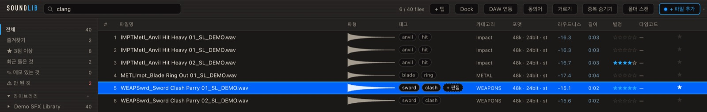
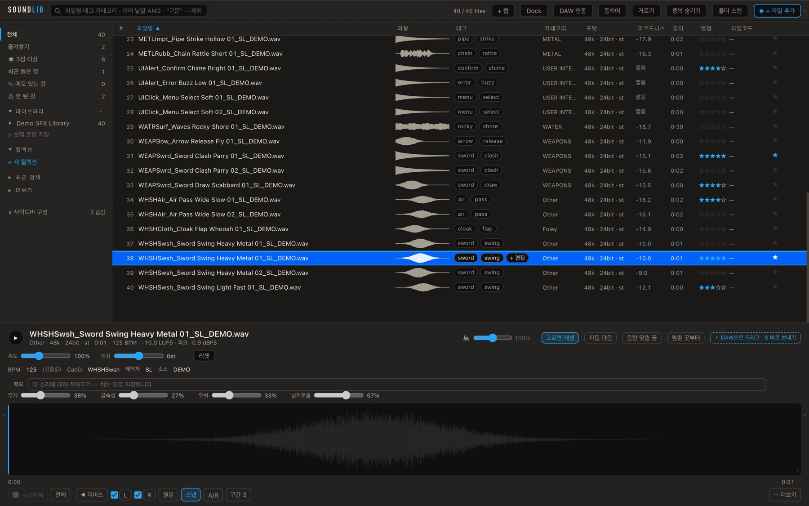
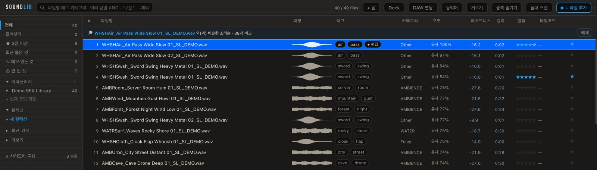
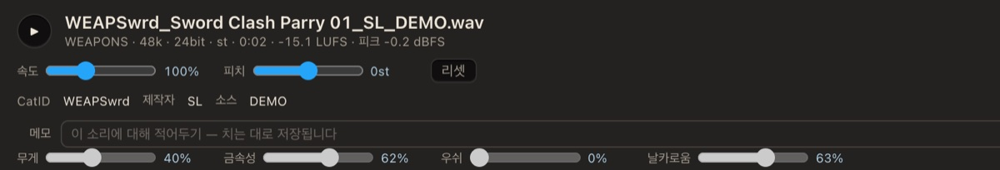
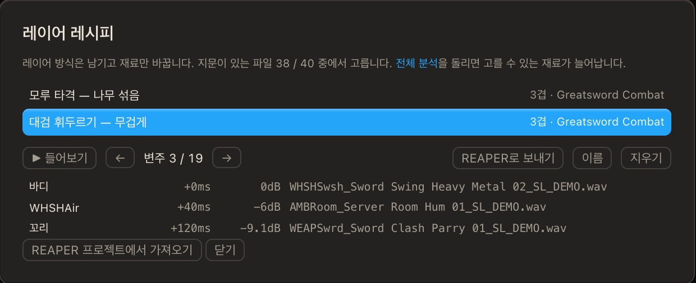
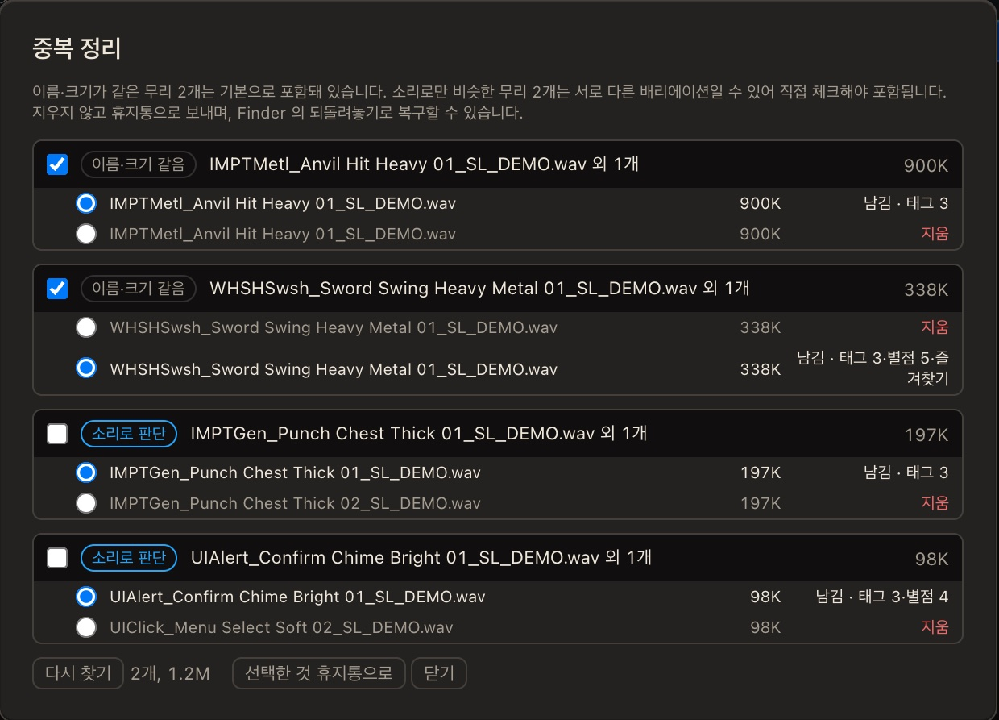

Find
파일 이름에 없는 단어로도 찾습니다
- UCS 카테고리로 자동 분류, 탭마다 다른 검색


색인·별점·태그·메모가 전부 이 기계 안에 남습니다. 인터넷이 없어도 그대로 동작합니다.
스캔은 목록만 만듭니다. 파일을 옮기거나 다시 쓰지 않습니다 — 이름 바꾸기처럼 직접 시킨 일만 빼고요.
↑↓로 훑고, 스페이스로 듣고, 숫자로 별점을 매기고, S로 보냅니다. 손을 마우스로 옮기지 않아도 됩니다.


라이브러리를 한 번 분석해 두면 목록에서 바로 보입니다. 라우드니스로 줄을 세우고, 파일마다 무엇이 재어졌고 무엇이 추정인지 구분해서 보여줍니다.



고른 소리를 REAPER의 편집 커서 자리에 바로 넣습니다. 파형에서 구간을 잡아 두면 그 구간만 갑니다. 끌어다 놓아도 되고, 안 되는 환경에서는 클립보드로 넘깁니다 — 조용히 실패하지 않습니다.
7일 무료 체험. macOS와 Windows에서 씁니다.
아직 Apple 공증을 받지 않은 빌드라, 처음 열 때 macOS가 "확인되지 않은 개발자" 경고를 띄웁니다. 우클릭 → 열기로 한 번 허용하면 됩니다. macOS 15 이상에서는 시스템 설정 → 개인정보 보호 및 보안 맨 아래의 "그래도 열기"를 누릅니다.
버그든, 있었으면 하는 기능이든 편하게 적어주세요.